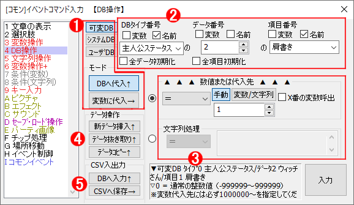

イベントコマンド 【DB（データベース）操作】
各データベースから値を読み込んだり、可変データベースの値を変更したりすることができます。

【機能の説明】
１．可変DB / システムDB / ユーザDB ボタン ： DBへ代入 / 変数に代入ボタン
どのデータベースに対して処理を行うかを選択するボタンです。なお、「DBへ代入」が可能なのは可変DBのみで、それ以外のDBを扱うときは常に「変数に代入」が選択されます。
２．データベースの対象
処理したい（または読み込みたい）データベースのタイプ番号・データ番号・項目番号を指定します。この欄には2000000（通常変数0番）などの変数も指定可能です。
タイプ番号を指定して「データ数取得」「項目数取得」のチェックボックスにチェックを入れると、指定したタイプのデータ数や項目数が変数に代入されます。
指定した「番号」の「タイプ名取得」「データ名取得」「項目名取得」、または指定した「名前」の「タイプ番号取得」「データ番号取得」「項目番号取得」も可能です。
タイプ番号を指定して「全データ初期化」をすると、その可変DBタイプが全初期化されます。タイプ番号とデータ番号を指定して「全内容初期化」をすることで特定のデータのみを初期化することもできます。なお、初期化する数値は、「タイプの内容設定」指定された初期値になります（ゲーム開始時の値とは異なります）。
また、各入力欄の「名前」にチェックを入れると、データベースのタイプ/データ/項目の名前で呼び出すことができます。可変DBでデータIDの設定方法に「最初の文字列データ」を設定している場合、途中で書き換えられても指定できるのはゲーム開始時の文字列になります。なお、特殊文字による変数呼び出しはできませんので注意してください(例えば、\cself[5]と入力しても、コモンセルフ5の中身の文字列ではなく、"\cself[5]"という項目名が検索されます)。
３．処理変数
読み込みたい（または処理したい）変数を指定します。「＝」などの演算子の意味については「計算式の説明」を参照してください
4．データ操作 「新データ挿入↑」「データ抜き取り↑」「データコピー↑」
ゲーム中、データベースのデータを特定個数だけ「挿入」したり、特定個数だけ「抜き取ったり」、特定データの全項目を特定番号のデータに「コピー」することができます。
「挿入」「抜き取り」すると操作した場所以降のデータ番号もずれます。
5．ゲーム中のCSVファイル読み込み・保存機能
ゲーム中、データベースのデータをCSVファイルへ保存したり、CSVファイルからのデータ読み込みが可能です（CSVファイル＝カンマ区切りのテキストデータファイル）。 ユーザDBを上書きすることも可能ですが、「データ名」を「名前で呼出」してる場合は挙動がおかしくなります。
データ名とデータ番号のひも付けは、高速化のために、ゲーム開始時に一括して行っているので、途中で変更しても反映されないためです。
「読込ファイル」欄には特殊文字の\s[?]や\cself[?]などが使用可能です。
※対象ファイルのアドレスとして「//」「\\」「..」「./」「.\」「%」「:」「*」「?」「"」「<」「>」「|」が含まれているとエラーが出ますので注意してください(Ver3.00より)。
【「データ番号」/「項目番号」指定で限界オーバーした場合】
データベースの「データ番号」は0〜9999まで、「項目番号」は0〜99の範囲までしか使えませんが、実はその数をオーバーした値を指定することもできます。
●たとえばデータ番号を「10000」にすると「次のタイプのDB」を対象にします。
「タイプ20のデータ番号10000」は、実際には「タイプ21のデータ番号0」として扱われるのです。
●「項目番号」も同様で「タイプ20のデータ番号2の項目番号200」に指定した場合は「タイプ20のデータ番号4の項目0」扱いになります。
→ これらは「タイプをまたいで10000個以上のデータを扱ったり」、「データをまたいで100個以上の項目を扱う状況」のために用意されている仕様です。
単純に「データ番号が限界を越えると次のタイプに移る」「項目番号が限界を越えると次のデータに移る」というだけなので、必要に応じてうまく活用してみてください。
（たとえば同じタイプ3つ分をタイプ20〜22に並べて使えば、「タイプ20の0〜29999番まで」の「データ」を保存することもできます）